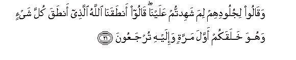

بسم الله الرحمن الرحيم
Sayyid Abul Ala Maududi - Tafhim al-Qur'an - The Meaning of the Qur'an
 41.
Surah Ha Mim As Sajdah, also known as Surah Fussilat (Explained in
Detail)
41.
Surah Ha Mim As Sajdah, also known as Surah Fussilat (Explained in
Detail)
The name of this Surah is composed of two words, Ha-Mim and As-Sajdah, which implies that it is a Surah which begins with Ha-Mim and in which a verse requiring the performance of sajdah (prostration) has occurred.
According to authentic Traditions, it was sent down after the affirmation of the Faith by Hadrat Hamzah and before the affirmation of the Faith by Hadrat Umar. Muhammad bin Ishaq, the earliest biographer of the Holy Prophet, has related on the authority of Muhammad bin Ka'b al-Qurzi, the famous follower of the Companions, that one day some of the Quraish chiefs were sitting in their assembly in the Masjid al-Haram, while in another corner of the Mosque there was the Holy Prophet sitting by himself. This was the time when Hadrat Hamzah had already embraced Islam and the people of the Quraish were feeling upset at the growing numbers of the Muslims. On this occasion, Utbah bin Rabi'ah (the father-in-law of Abu Sufyan) said to the Quraish chiefs: "Gentlemen, if you like I would go and speak to Muhammad (upon whom be Allah's peace and blessings) and put before him some proposals; maybe that he accepts one of them, to which we may also agree, and so he stops opposing us." They all agreed to this, and Utbah went and sat by the Holy Prophet. When the Holy Prophet turned to him, he said: "Nephew, you know the high status that you enjoy in the community by virtue of your ancestry and family relations, but you have put your people to great trouble: you have created divisions among them and you consider them to be fools: you talk ill of their religion and gods, and say things as though all our forefathers were pagans. Now listen to me and I shall make some suggestions. Consider them well: maybe that you accept one of them." The Holy Prophet said: "Abul Walid, say what you want to say and I shall listen to you." He said, "Nephew, if by what you are doing, you want wealth, we will give you enough of it so that you will be the richest man among us; if you want to became an important man, we will make you our chief and will never decide a matter without you; if you want to be a king, we will accept you as our king; and if you are visited by a jinn, whom you cannot get rid of by your own power, we will arrange the best physicians and have you treated at our own expense." 'Utbah went on speaking in this strain and the Holy Prophet went on listening to him quietly. Then he said, "Have you said, O Abul Walid, what you had to say?" He replied that he had. The Holy Prophet said: "Well, now listen to me."Then pronouncing Bismilah ir Rehman-ir-Raihm he began to recite this very Surah, and Utbah kept on listening to it, putting his hands behind his back and leaning on them as he listened. Coming to the verse of prostration (v. 38) the Holy Prophet prostrated himself; then raising his head, said, "This was my reply, O Abul Walid, now you may act as you please." then Utbah arose and walked back towards the chiefs, the people saw him from afar, and said: "By God! Utbab's face is changed. He does not look the same man that he was when he went from here." Then, when he came back and sat down, the people asked, "What have you heard?" He replied, "By God! I have heard something the like of which I had never heard before. By God, it's neither poetry, nor sorcery, nor magic. O chiefs of the Quraish, listen to what I say and leave this man to himself. I think what he recites is going to have its effect. If the other Arabs overcome him, you will be saved from raising your band against your brother, and the others will deal with him. But if he overcame Arabia, his sovereignty would be your sovereignty and his honor your honor." Hearing this the chiefs spoke out:"You too, O father of Walid, have been bewitched by his tongue." Utbah replied, "I have given you my opinion; now you may act as you please." (Ibn Hisham, vol. I, pp. 313-314).
This story has been narrated by several other traditionists also on the authority of Hadrat Jabir bin Abdullah in different ways, with a little variation in wording. In some traditions it has also been related that when during the recitation the Holy Prophet had come to verse 13, viz."If they turn away, say to them: I warn you of a thunderbolt the like of which had visited the Ad and the Thamud,"Utbah had spontaneously placed his hand on the Holy Prophet's mouth, and said: "For God's sake, have mercy on your people." Afterwards he justified his action before the Quraish chiefs, saying: "You know that whatever Muhammad says is always fulfilled; therefore, I feared lest a torment should descend on us." (For details, see Tafsir Ibn Kathir, vol. IV, pp. 90- 91; Al Bidayah wan-Nihayah, vol. III, p. 62).
In the discourse that Allah sent down in response to what Utbah said, no attention whatever was paid to the absurd proposals that he had made to the Holy Prophet. For what he had said was, in fact, an attack on the Holy Prophet's intention and his intellect. His assumption was that as there was no possibility of his being a Prophet and the Quran being Allah's Revelation, inevitably the motive of his invitation must either be the desire to obtain wealth and political power, or, God forbid, he had lost his reason. In the first case, he wanted to make a bargain with the Holy Prophet; in the second, he was insulting him when he said that the Quraish chiefs would have been cured of his madness at their own expense. Obviously, when the opponents come down to such absurd things, no gentleman would like to answer them, but would ignore them and say what he himself had to say.
Therefore, ignoring what Utbah said, this Surah makes antagonism its subject of discussion, which the unbelieving Quraish were showing stubbornly and wickedly in order to defeat the message of the Qur'an. They would say to tho Holy Prophet, "You may try however hard you try: we would not listen to you. We have put coverings on our hearts and we have closed our ears. There is a wall between you and us, which would never let us meet together."
They had given a clear notice to the Holy Prophet to the effect: "You may continue your mission of inviting the people to yourself, but we would go on opposing you as hard as we can to frustrate your mission."
For this object they had devised the following plan: Whenever the Holy Prophet or a follower of his would try to recite the Qur'an before the people, they would at once raise such a hue and cry that no one could bear anything.
They were desperately trying to misconstrue the verses of the Qur'an and spread every kind of misunderstanding among the people. They misconstrued everything and found fault even with the straightforward things. They would isolate words and sentences from their right context, from here and there, and would add their own words in order to put new meanings on them so as to mislead the people about the Quran and the Messenger who presented it.
They would raise strange objections a specimen of which has been presented in this Surah. They said, "If an Arab presents a discourse in Arabic, what could be the miracle in it? Arabic is his mother tongue. Anyone could compose anything that he pleased in his mother tongue and then make the claim that he had received it from God. It would be a miracle if the person would suddenly arise and make an eloquent speech in a foreign tongue which he did not know. Then only could one say that the discourse was not of his own composition but a revelation from God."
Here is a resume of what has been said in answer to this deaf and blind opposition:
The Qur'an is most certainly the Word of God, which He has sent down in Arabic. The ignorant people do not find any light of knowledge in the truths that have been presented in it plainly and clearly, but the people of understanding are seeing this light as well as benefiting by it. It is surely Allah's mercy that He has sent down this Word for the guidance of man. If a person regarded it as an affliction, it would be his own misfortune. Good news is for those who benefit by it and warning for those who turn away from it.
If you have put coverings on your hearts and have made yourselves deaf, it is none of the Prophet's job to make the one hear who does not want to hear, and the one who does not want to understand understand forcibly. He is a man like you; he can make only those to hear and understand, who are inclined to hear and understand.
Whether you close down your eyes and ears and put coverings on your hearts, the fact, however, is that your God is only One God, and you are not the servant of any one else. Your stubbornness cannot change this reality in any way. If you accept this truth and correct your behavior accordingly you will do good only to yourselves, and if you reject it, you will only be preparing your own doom.
Do you have any understanding as to whom you disbelieve and with whom you associate others in divinity? It is with regard to that God Who has created this limitless universe, Who is the Creator of the earth and heavens, from Whose blessings you are benefiting on the earth, and on Whose provisions you are being fed and sustained. You set up His mean creatures as His associates and then you are made to understand the truth you turn away in stubbornness.
If you still do not believe, then be aware that a sudden torment is about to visit you, the like of which had visited the Ad and the Thamud, and this torment also will not be the final punishment of your crimes, but there is in addition the accountability and the fire of Hell in the Hereafter.
Wretched is the man who gets as company such satans from among men and jinn, who show him nothing but green and pleasant, who make his follies seem fair to him, who neither let him think aright himself nor let him hear right from others. But on the Day of Reckoning when their doom overtakes them, each one of them will say that if he happened to get hold of those who had misled and deceived him in the world, he would trample them under his foot.
This Quran is an unchangeable Book. You can not defeat it by your machinations and falsehoods. Whether falsehood comes from the front or makes a secret and indirect attack from behind, it cannot succeed in refuting it.
Today when this Quran is being Presented in your own language so that you may understand it, you say that it should have been sent down in some foreign tongue. But had We sent it in a foreign tongue for your guidance, you would yourselves have called it a joke, as if to say, "What a strange thing! The Arabs are being given guidance in a non- Arabic language, which nobody understands." This means that you, in fact, have no desire to obtain guidance. You are only inventing ever new excuses for not affirming the faith.
Have you ever considered that if it became established that the Qur'an was really from Allah, then what fate you would meet by denying it and opposing it so vehemently as you do?
Today you do not believe but soon you will see with your own eyes that the message of this Qur'an had pervaded the whole world and you have yourselves been overwhelmed by it. Then you will come to know that what you were being told was the very truth.
Besides giving these answers to the opponents, attention has been paid to the problems which the believers and the Holy Prophet himself were facing in that environment of active resistance. Not to speak of preaching the message to others, the believers were even finding it difficult to follow the way of the Faith. Any one about whom it became known that he had become a Muslim, life would become an agony. As against the dreadful combination of the enemy and its all pervading power, they were feeling utterly helpless and powerless. In this state, in the first place, they were consoled and encouraged, as if to say: "You are not, in fact, helpless and powerless, for any person who believes in God as his Lord and adheres to this belief and way of life resolutely, God's angels descend on him and help and support him at every stage, from the life of this world till the Hereafter." Then they were encouraged with the consolation: "The best man is be who does good, invites others to God and proclaims firmly that he is a Muslim."
The question that was vexing the Holy Prophet at that time was as to how be should carve out a way of preaching his message when he had to face such heavy odds on every side. The solution he was given to this question was: "Although apparently the obstacles seem to be insurmountable, the weapon of good morals and character can smash and melt them away. Use this weapon patiently, and whenever Satan provokes you and incites you to use some other device, seek refuge in Allah."

In the name of Allah, the Compassionate, the Merciful.
[1-5] Ha-Mim. This is a Revelation from the All-Compassionate, the All-Merciful God, a Book whose verses are well-expounded, an Arabic Qur'an for those who have knowledge, a giver of good news and a warner.1 Yet most of these people have turned away from it, and they pay no heed. They say, "Our hearts are covered with veils from that to which you are calling us.2 Our ears have become deaf, and between. us and you there is a curtain.3 So do as you please; we shall do as we will."4
[6-8] O Prophet, say to them I am only a man, like you.5 I am told by revelation that your God is only One God.6 Therefore, turn straight to Him alone7 and ask for His forgiveness.8 Woe to the mushriks who do not pay the Zakat9 and deny the Hereafter. As for those who have believed and done right, for them there is surely an unfailing reward.10

[9-12] O Prophet, say to them, “Do you deny that God, and set up others as equals with Him, Who created the earth in two days? He indeed is the Lord of all creation. He set mountains over the earth (after its creation) and bestowed blessings on it,11 and provided in it means of sustenance adequately according to the needs and demands of all those who ask.12 This was done in four days.13 Then He turned to the heaven, which was only smoke at that time.14 He said to the heaven and the earth "Come into being, whether you like it or not." They both said, "We do come in submission."15 Then in two days He made the seven heavens, and in each heaven He ordained its law, and We adorned the lower heaven with lights and made it fully secure.16 Such is the design of the One, Who is the All-Mighty, the All-Knowing.”
[13-14] Now if they turn away,17 say to them, "I warn you of a thunderbolt of punishment the like of which had descended upon the 'Ad and the Thamud. When the Messengers of God came to them from every side, from front and from behind,18 saying, "Worship none but Allah" , they said, "Had our Lord so willed, He would have sent down angels; therefore, we deny what you have been sent with."19
[15-16] As for the 'Ad, they became arrogant with pride in the land without any right, and said, "Who is stronger than us in might?" Did they not see that God, Who had created them, is stronger than they in might? Yet they continued to deny Our Revelations. Consequently, We sent upon them a stormy wind over a few ill-omened days20 so that We might make them taste a disgraceful scourge in the life of this world,21 but the scourge of the Hereafter is even more disgraceful; there they shall have none to help them.
[17-18] As for the Thamud, We presented before them the right way, but they preferred to remain blind rather than see the way. Consequently, a humiliating scourge overtook them all of a sudden on account of their misdeeds, and We saved those, who had believed and refrained from error and wrongdoing.22

[19-23] And imagine the time when the enemies of Allah will be gathered together to be driven to Hell.23 Their former generations will be withheld till their later generations also will join them.24 Then, when all will have reached there, their ears and their eyes and their very skins will bear witness against them concerning what they had been doing in this world.25 They will say to their skins. "Why have you borne witness against us?" They will reply, "The same God Who has given speech to everything has given us speech.26 He it is, Who created you in the first instance, and now to Him you are being brought back. When in the world you hid yourselves while committing crime, you never thought that your ears and your own eyes and your own skins would ever bear witness against you. Rather you thought that even Allah had no knowledge of many of your deeds. This same thought that you had concerning your Lord, has ruined you, and on the same count you have incurred loss."27
[24-25] As such, whether they are patient (or not), the Fire will still be their abode, and if they want to make amends, they will not be allowed to do so.28 We had set upon them companions who made everything, in front of them and behind them, seem fair to them.29 At last, the sane Decree of punishment proved true against them, which had proved true against the jinn and the men who had gone before them. Certainly they were the losers.
[26-29] The disbelievers say, "Do not listen to this Qur'an, and when it is recited, cause interruption in it, so that you might attain the upper hand."30 We shall certainly make these disbelievers to taste a severe chastisement, and shall fully requite them for the worst of their misdeeds. That is Hell, the requital of the enemies of Allah, wherein they shall live for ever. This is the punishment of the crime that they denied Our Revelations. There the disbelievers will say, "Our Lord, show us the jinn and the men,who led us astray. We shall trample them under our feet so that they are utterly disgraced."31
[30-32] Those32 who said, "Allah is our Lord," and then stood steadfast,33 angels descend on them34 and say, "Fear not nor grieve,35 and rejoice in the good news of Paradise that has been promised to you: we are your companions in the life of this world, and in the Hereafter, too. There you will have whatever you desire, and whatever you ask for will be yours---an entertainment from the One, Who is All-Forgiving, All-Merciful."
[33] And who could be better of speech than the one who called to Allah and did right and said, "I am a Muslim."36
[34-36] And O Prophet, goodness and evil are not equal. Repel evil with what is best. You will see that he with whom you had enmity, has become your closest friend.37 But none can attain to this quality except those who endure with patience,38 and none can attain to this rank except those who are men of great good fortune.39 And if you feel an incitement from Satan, seek refuge in Allah.40 He hears everything and knows everything.41
[37-38] Among42 the signs of Allah are the night and the day and the sun and the moon.43 Do not prostrate yourselves before the sun and the moon, but prostrate yourselves before that God, Who created them, if You really are His worshipers.44 But it does not matter if these people show arrogance and still persist in their way,45 for the angels who are nearest to your Lord, glorify Him day and night and never feel wearied.46
[39] And among the Signs of Allah is this that you see the earth dry and desolate; then as soon as We send down rain on it, it stirs (to life) and swells. Surely the God Who gives the dead earth life will raise the dead men also to life.47 Indeed, He has power over everything.
[40-42] Those48 who misconstrue Our Revelations49 are not in any way hidden from Us.50 Just consider who is better: he who will be cast into the Hell-Fire, or he who will appear on the Day of Resurrection in full security? Do as you please; Allah is watching over everything you do. These are the people who refused to believe in the Admonition when it came to them. But the fact is that this is a mighty Book.51 Falsehood can neither come at it from before it nor from behind it.52 It is a Revelation from the All-Wise, All-Praiseworthy One.
[43] (O Prophet,) Nothing is being said to you that has not already been said to the Messengers before you. Surely your Lord is highly forgiving,53 yet stern in inflicting a painful punishment.

[44-45] Had We sent this Qur'an in a foreign tongue, the people would have said, "Why have not its verses been well expounded? What! The scripture in a foreign language and the listeners are Arabs?54 Say to them, 'This Qur'an is a guidance and a healing for the believers, but to those who do not believe, it is a plug in their ears and a covering over their eyes. It is as though they are being summoned from afar.55 Before this We had given to Moses the Book, and it was similarly disputed.56 If your Lord had not already decreed a thing, the judgment would have been passed between the disputants.57 And the fact is that they are involved in an anxious doubt about it.58
[46] Whoever does good will do so for his own self, and whoever does evil will himself bear its consequences: your Lord is never unjust to His servants.59
[47-48] To Allah is remitted60 the knowledge of the Hour.61 He alone knows all the fruits that come out from their sheaths: He alone knows which female has conceived and which has given birth.62 Then on the Day when He will call out to the people, asking, "Where are those associates of Mine"? they will say, "We have submitted: there is none of us to bear witness to that."63 At that time, all those gods whom they used to invoke before this, shall be lost to them,64 and they will realize that they have no refuge.
[49-50] Man is never wearied of praying for good,65 and when an evil befalls him, he loses hope and becomes desperate. But when We let him taste Our mercy after the hardship, he says, "I deserve this,66 and I do not think that the Hour (of Resurrection) will ever come. But if I am really brought back to my Lord, I shall have good reward with Him, too. " The fact, however, is that We shall certainly tell the disbelievers what they had done, and We shall make them taste a most degrading Chastisement.
[51] When We bless man, he turns away and grows stiff necked;67 but when an evil touches him, he comes with lengthy supplications.68
[52] O Prophet, say to them, "Did you ever consider this: If this Qur'an were really from Allah, And you went on denying it, who could be more astray than the one who had gone far off in antagonism towards it?"69
[53-54] Soon shall We show them Our Signs in the World around them, as well as in themselves, till it becomes clear to them, that this Qur'an is indeed the Truth.70 Is it not enough that your Lord watches everything?71 Look! These people are in doubt about the meeting with their Lord.72 Listen! He encompasses everything!73
1This is a brief introduction to the Surah. A study of the following discourse can show what relevance the things mentioned in it have with the theme that follows. The first thing said is that this Word is being sent down by God, as if to say: "You, O people, may go on saying again and again that this Word is being composed by Muhammad (upon whom be Allah's peace) but the fact is that its revelation is from God, Lord of the worlds. " Furthermore, the addressees have also been warned, so as to say: "If you express your displeasure on hearing this discourse. this displeasure is not against Muhammad (upon whom be Allah's peace) tart against God. If you reject it, you reject Allah's Word, not of a man, and if you turn away from it, you do not turn away from a mart but from Allah."
Secondly, that the one sending it down is that God, Who is extremely Merciful (Rehman and Rahim) to His creatures. The mention of the attribute of mercy of the Sender of Revelation, instead of any other attributes, points to the truth that He has sent down this Word under the requirement of His mercifulness. By this the addressees have been warned, so as to say: ¦If someone spurns this Word, or rejects it. or expresses displeasure at it, he in fact is his own enemy "That is indeed a supreme blessing. which God has sent down, out of this infinite mercy, for the guidance and well-being and happiness of man. if God were merciless to mankind, He would have left them to wander about in darkness and would have least cared what pit they fell into. But this is His bounty and beneficence that along with bringing men into existence and providing for them He has taken on Himself the responsibility to show them the light of knowledge also in order to adorn their lives, and is sending down this Word to a servant of His for the same purpose. Now, who could be more ungrateful and a greater enemy of himself than the one who instead of benefiting from this mercy made up his mind to fight it?"
Thirdly that the verses of this Book are well-expounded. That is, there is nothing confusing and ambiguous in it so that somebody might excuse himself from accepting it on the ground that he was unable to understand the contents of the Book. It has been plainly told m it what is the truth and what is the falsehood, what arc the right beliefs and what are the wrong beliefs, what is good and what is evil, what is high morality and what is vice, in what way lies the good of man and in what he incurs loss for himself. If a person rejects such clear and manifest guidance, or pays no heed to it, he cannot offer any excuse for it. His attitude clearly implies that he wants to remain in the wrong willfully.
Fourthly, that this is an Arabic Qur'an, which implies this: "If this Qur'an had been sent down in some other language, the Arabs would have presented the excuse that they were ignorant of the language in which God had sent His Book. But this is their own language. They cannot put forward the excuse that they cannot understand it. (Here, one should keep in view verse 44 also, in which the same theme has been expressed in a different way, and the suspicion that in that case there is a reasonable excuse for the non-Arabs not to accept the message of the Qur'an, we have already removed in our commentary of Surah Yusuf: 2 and E.N. 2 on it. Please also see Rasa'il-o-Masa'il. Vol. I, pp. 19-23).
Fifthly, that this Book is for those who possess knowledge. That is, only the people of understanding can draw any benefit from this Book. For the ignorant it is as useless as a precious diamond for the one who cannot distinguish it from a mere stone.
Sixthly, that this Book gives good news and administers warning. That is, it does not consist of mere fantasy, or a philosophy, or a specimen of good literary composition, which one may accept or reject without entailing any consequence, but it is openly administering a warning to the whole world that the results of accepting and believing in it are marvelous and of rejecting it very dreadful. Thus only a fool could reject it with scant attention.
2That is, "It has no way open to reach our hearts."
3That is "This invitation has divided us: it has cut us off from you it leas become a hindrance for us to join you."
4It has two meanings:
(1) "That we have nothing to do with you ;" and
(2) "that if you do not desist from your preaching, you may go on doing your mission, we also will not stop our opposition to you, and we will do whatever we can to defeat and frustrate your mission. "
5That is, "It is not in my power to remove the covering that envelops your hearts, open your ears, and tear away the curtain which you have drawn between me and yourselves, I am only a man: I can make only him understand who is inclined to listen, and can only meet him who is ready to meet me."
6That is. "You may if you so like put coverings on your hearts and make your ears deaf, but the fact is that you don't have many gods: then is only One God, whose servants you are. And this is no philosophy, which I might have thought out myself, and which might have equal probability of being true or false, but this reality has been made known to me through revelation, which cannot admit of any likelihood of error. "
7That is, "Do not make any other your God: do not serve and worship any other deity: do not invoke and bow to any other for help: and do not obey and follow the customs and laws and codes made and set by others. "
8"Ask for His forgiveness": Ask for His forgiveness for the unfaithfulness that you have been showing so far towards Him, for the shirk and disbelief and disobedience that you have been committing till now, and for the sins that you happened to comfit due to forgetfulness of God.
9Here, the meaning of the word zakat has been disputed by the commentators. Ibn `Abbas and his illustrious pupils, `Ikrimah and Mujahid, say that zakat here implies the purity of the soul and self which accrues from belief in Tauhid and obedience to Allah. According to this explanation, the translation of the verse would be: "Woe to the mushriks, who do not adopt purity." The other group which includes commentators like Qatadah, Suddi, Hasan Basri, Dahhak, Muqatil and Ibn as-Sa'ib take this word here also in the meaning of the zakat on property and wealth. According to this explanation, the verse means: "Woe to those who do not fulfil the right of Allah by committing shirk and the right of the men by withholding the zakat.
10The words ajrun ghaira mamnun in the original have two other meanings also:
(1) That it will be a reward which will never decrease and diminish; and
(2) that this reward will not be given with reminders of good done, like the gift made by a miserly person, who keeps on reminding the beneficiary of his favor if at all he gives away anything.
11"Blessings of the earth" imply those measureless and countless things which have been continuously coming out of it since millions and millions of years, and are fulfilling the ever increasing needs and requirements of all the creatures from the microscopic germs to the highly civilized man. Among these the principal blessings are the air and the water by which alone vegetable, animal and then human life became possible on the earth.
12This sentence has been interpreted by the commentators in different ways:
Some of them interpret it to mean: "The provisions of the earth were placed in it precisely according to the needs and requirements of those who ask, in exactly four days." That is, it took exactly four days, neither more nor less.
Ibn `Abbas, Qatadah and Suddi interpret it to mean: "The provisions of the earth were placed in it in four days. The answer to those who ask is completed. " That is, whoever asks as to how long it took, his complete answer is that it took four days.
According to Ibn Zaid it means: "The provisions of the earth were placed in it for those who ask within four days, precisely in accordance with the demand and need of everyone. "
As far as the rules of the language are concerned, the words of the verse admit of all these three meanings, but in our opinion the first two meanings have no merit. In view of the context, it is immaterial whether the work was completed in exactly four days and not in more or less four days. There is no need whatever for such an addition to make up for any deficiency in supporting the description of Allah's perfect power, perfect providence and perfect wisdom. Likewise, the commentary: "The answer to those who ask is completed," is a very weak commentary. There is no indication in the theme preceding the verse and following it, to show that at that time somebody had asked the question as to how long it had taken for those works to be completed, and this verse was sent down as an answer to it. That is why we have adopted the third meaning in our translation. In our opinion the correct meaning of the verse is this: "Allah placed within the earth the full provisions of food precisely and exactly in accordance with the demands and needs of every kind of creature that Allah had to create in the earth from the beginning of the creation till Resurrection. There are countless kinds of vegetation found on land and in water and the food requirements of each kind are different from those of other kinds. Allah has created countless species of living creatures in the air and on land and in water, and every species demands a different kind of food. Then unique among all these is the species of man, who requires different kinds of food not only for the development and nourishment of his body but also for the satisfaction of his taste. Who beside Allah could know how many members of the different kinds of creatures would be born on this globe, from the beginning of life till its end, and when and where they would be born and how much and what kind of food would be required for their nourishment? Just as He had made the plan of creating those creatures who stood in need of food in His scheme of creation, so He made full arrangements of food also to meet their requirements and demands.
In the modern age, the people who have brought out the Islamic edition of the Marxist conception of Socialism in the name of "the Qur'anic order of providence", translate the words sawa-al-lis-sa'-ilin as `equal for all those who ask", and raise the edifice of reasoning on it, saying that Allah has kept equal provisions for All the people in the earth; therefore, in order to fulfil the intention of the verse a system of the state is needed which may provide equal rations of food to everybody. For in the system of individual ownership the equality which the ¦Qur'anic law" demands cannot be established. But these people, in their enthusiasm to press the Qur'an in the service of their theories, forget that ¦those who ask", who have been mentioned in this verse, are not only human beings but All those different species of animals and plants who need food for survival. Has Allah really established equality among all of them, or even among all the members of each different species of the creatures, in the matter of the provision of food? Do you find anywhere in this entire system of nature the arrangement of the distribution of equal rations of food? If that is not the case, it means that in the vegetable and animal kingdom, where the distribution of the provisions is directly being arranged by the State of Allah, and not by the human state, Allah Himself is violating His own this "Qur'anic law", rather, God forbid, is practicing injustice! Then, they also forgo that "those who ask" also include those animals which man domesticates and arranging provisions for which is also his responsibility, e.g. sheep, goats, cows, buffaloes, horses, asses, mules, camels, etc: If the Qur'anic law is that equal food be given to all those who ask, and to enforce the same law a state is needed, which may administer the order of providence, will that state establish economic equality between men and animals also?
13Here, the commentators generally have been confronted with this question: If it is admitted that the creation of the earth took two days and the setting up of the mountains and placing of the provisions and blessings in it took four days, and the creation of the heavens, as mentioned below, took another two days, the total number of the days would be eight, whereas at several places in the Qur'an Allah has said that the creation of the earth and heavens took six days in all. (For example, see AI-A `raf: 54, Yunus: 3, Hud: 7, AI-Furqan: 59). On this very basis, almost all the commentators agree that these four days include the two days of the creation of the earth. That is, two days were taken for the creation of the earth and two days for the creation of the rest of the things within the earth, as mentioned below. Thus, the earth along with its provisions became complete in four days in all. But this not only is against the apparent words of the Qur'an, but the difficulty also is, in fact, an imaginary difficulty, to avoid which need for this interpretation has been felt. The two days of the creation of the earth arc, in fact, not separate from the two days in which this universe as a whole was created. If we consider the following verses, we see that in them the creation of both the earth and the heavens has been mentioned together, and then it has been stated that Allah made the seven heavens in two days. These seven heavens imply the whole universe, one part of which is also our earth. Then, when like the other countless stars and planets of the universe this earth also took the shape of a unique globe within two days, Allah began to prepare it for animate creatures, and in four days created in it all those provisions which have been mentioned in the above verse. What development works were carried out in the other stars and planets in these four days have not been mentioned by Allah, for not to speak of the man of the period of the revelation of the Qur'an, even the man of the present age does not have the capability to digest and assimilate this information.
14Three things need to be explained here:
First, by "heaven" is meant the whole universe, as becomes obvious from the following sentences. In other words, "turning to the heaven" means that Allah turned to the creation of the universe.
Second, by "smoke" is implied the initial and primary stage of matter, in which it lay diffused in space in a shapeless, dust like condition before the formation of the universe. Scientists of the modern age describe the same thing as nebulae, and the same also is their view about the beginning of the universe: that is, before creation the matter of which the universe was built lay diffused in smoke-like nebulous form.
Third, it would be wrong to interpret "then He turned to the heaven" to mean that first He created the earth, then set mountains in it, then arranged blessings and provisions of food in it, and then, at the end, He turned towards the creation of the universe. This misunderstanding is removed by the following sentence: "He said to the heavens and the earth: Come into being; and they said: we come in submission. " This makes it clear that in this verse and in the following verses, mention is being made of the time when there was neither the earth nor the heaven, but the creation of the universe was being started. Only the word thumma (then) cannot be made the argument to say that the earth had been created before the heavens. There are several instances of this in the Qur'an that the word thumma is not necessarily used w show the chronological order but it is also used for the order of Presentation. (Please see E.N. 12 of Surah Az-Zumar).
Among the earliest commentators the dispute has been going on for ages as to what was created first according to the Qur'an, the earth or the heavens. One group of them argues on the basis of this verse and verse 29 of Al-Baqarah that the earth was created first. The other group argues from verses 27-33 of An Nazi'at that the heavens were created first, because there it has been clearly stated that the earth was created after the heavens. But the fact is that nowhere in the Qur'an has the mention of the creation of the universe been made to teach Physics or Astronomy, but while inviting towards belief in the doctrines to Tauhid and the Hereafter, like countless other Signs, the creation of the heavens and the earth also has been presented as food for thought. For this purpose it was not at All necessary that the chronological order of the creation of the heavens and the earth should have been presented, and it should have been told whether the heavens were created first or the earth. No matter whether this was created first or that, in any case both are an evidence of Allah Almighty's being the One and only Deity, and are a testimony that their Creator has not created this whole universe as a plaything for a care-fret person. That is why the Qur'an sometimes mentions the creation of the earth first and sometimes the creation of the heavens first. Where the object is to make man realize the blessings of God, there generally it has mentioned the earth first, for it is closer to man; and where the object is to give man the concept of God's greatness and His omnipotence there it has generally mentioned the heavens first, for the scene of the revolving heavens has always been awe-inspiring for man.
15In these words Allah has described the nature of His method of creation in a manner as to differentiate between Divine creation and human workmanship. When man wants to make something, he prepares a plan for it in his mind: then gathers together the necessary material; then works persistently hard to mold the material according to his plan, and in the process of his effort the material which he wants to mold according to his mental plan constantly resists lute; so much so that sometimes the resistance of the material succeeds and the thing is not made precisely according to the desired plan, and sometimes man's effort overcomes the resistance and he succeeds in giving it the desired form and shape. For example, when a tailor wants to make a shirt, he first conceives in his mind the shape of the shirt, then arranging the cloth he tries to cut and sew it according to his concept of the shirt, and during this effort, he has constantly to face the resistance of the cloth, for it does not easily yield to be molded according to the tailor's concept; so much so that sometimes the resistance of the cloth dominates and the shirt doesn't take the desired shape, and sometimes the tailor's effort dominates and he is able to shape it precisely according to his concept. Now, consider Allah's mode of creation. The matter of the universe lay scattered and diffused in the form of smoke. Allah willed to give it the shape of the universe as it is now. For this purpose, He did not have to sit down, like a human artisan, and chisel and mold the earth and the moon and the sun and the other stars and planets, but He only commanded the scheme of the universe that was in His Mind to cane into being, i.e. the smoke like diffused matter to take the shape of the galaxies and stars and planets, which He wanted to create. This . matter did not have the power to resist the Command of Allah. Allah did not have to make any effort to give it the shape of the universe. No sooner was the Command given than the matter started contracting and condensing and taking shape obediently according to the scheme of its Master, so that the whole universe including the earth became ready in 48 hours.
This same scheme of Allah's method of creation has been described at several other places in the Qur'an like this: When Allah decides to do something He only commands it to be and it is done. (See AI-Baqarah: 117, AI-'Imran: 47, 59: An-Nahl: 40. Maryam: 35, Ya Sin: 82, Al-Mu'min: 68).
16To understand these verses well, it would be useful to study the following portions of the Tafhim al-Qur'an: AI-Baqarah: 29, Ar-Ra'd: 2, AI-Hijr: 1G-18, AI-Anbiya': 30-33, Al-Hajj: 65. Al-Mu'minun: 17, Ya Sin: E.N. 37, and E.N.'s 5, G of As-Saaffat. "
17That is, "If they do not believe that God and Deity is One and only One, who has created this earth and the whole universe, and still persist in their ignorance that they would make others also, who are in fact His creatures and slaves, deities beside Him, and regard them as His associates in His Being and rights and powers.
18This sentence can have several meanings:
(1) That the Messengers continued to come to them one after the other;
(2) that the Messengers tried in every way to make them understand the truth and did not leave any stone unturned to bring them to the Right Path; and
(3) that the Messengers came to them in their own country as well as in the adjoining countries.
19That is "If Allah had disapproved of our religion, and had willed to send a messenger to us to keep us away from it, He would have sent the angels. As you are not an angel but a man like us, we do not believe that you have been sent by God, and sent for the purpose that we give up our religion and adopt the way of life that you are presenting." The disbelievers' saying that they deny "what you have been sent with", was only sarcastic. It does not mean that they believed him to have been sent by God and then denied what he said. But this is a sarcastic expression of the type that Pharaoh had uttered before his courtiers about the Prophet Moses: "This messenger of yowl, who has been sent to you, seems to be utterly mad." (Ash-Shua'ra' 27). For further explanation, see E.N. 11 of Surah Ya Sin.
20"Ill-omened days" does not mean that the days in themselves were ill omened, and the torrent came because the people of Ad met with those ill omened days. If this were the meaning and there were some ill omen in the days themselves, the torment would have visited all the nations of the world. The cornet meaning, therefore, is that since in those days God's torment descended on this nation, the days were ill-omened for the people of 'Ad. It is not cornet to argue on the basis of the verse that some days are ill-omened and some auspicious.
The lexicographers have disputed the meaning of the words rih-an sarsaran, which have been used for the stormy wind. Some say that they imply an intensely hot wind; others say that they imply an extremely cold wind; and some others say that they imply a wind which produces a great noise when it blows. In any cast, they All agree that the words are used for a severe storm.
The details of this torment given at other places in the Qur'an show that this wind continued to rage for seven nights and eight days consecutively. It swept the people off the ground and they fell down dead and lay scattered here and there like hollow trunks of the palm-tree. (AI-Haaqqah: 7). It left rotting everything on which it blew. (Adh-Dhariyat 42). When the people of 'Ad saw it advancing, they rejoiced with the hope that the dense clouds would bring much rain, which would water their withering crops. But when it came it laid waste the entire land." (Al-Ahqaf: 24-25).
21This ignominious torment was an answer to their arrogance and vanity because of which they had assumed greatness in the land without any right, and would boast that there was none more powerful than they on the entire earth. Allah disgraced them and destroyed the major part of their population along with their civilization. The remnant of their population was humbled and debased before those very nations whom they used to overawe by their show of power and might (for the details of the story of 'Ad see AI-A'raf : 65-72; Hud: 50-60; Al Mu'minun: 32-41; Ash-Shua'ra' : 123-140; AI-'Ankabut; 40 and the relevant E.N.'s).
22For the details of the story of Thamud see AI-A'raf: 73-79; Hud: 61.68; AI-ZHjr: 80-84; Bani Isra'il: 59; Ash-Shua`ara' :141.159; An-Naml: 45-53 and the E.N.'s.
23What is meant to be said have is: "When they will be rounded up to be presented in the Court of Allah," though the words used are to the effect: "When they will be gathered to be driven to Hell," for Hell in any case will be their final destination.
24That is, All the former and latter generations and races will be gathered together at a time and called to account together, For whatever a person does in his lifetime, whether good yr evil, its influence and impact does not end with his life; but continues to operate even after his death for long periods of time, for which he is totally responsible. Likewise, whatever a generation does in its own time, its influence continues to affect the later generations for. centuries, and it is responsible for its heritage. It is inevitable to examine All these influences and their results and to collect their evidences. For that very reason, generation after generation of the people will go on arriving and will be withheld. The Court will start its work when All the former and latter generations will have assembled together in the Plain of Resurrection. (For further explanation, see AI-A'raf: 3839 and E.N. 30 on it).
25The explanation of this given in the Hadith is that when a stubborn culprit will go on denying his crimes, and will even belie All the witnesses, then the limbs of his body will bear the witness, one after the other, by the Command of Allah, and will tell what offenses he had committed through them. This thing has been reported by Hadrat Anas, Hadrat Abu Musa Ash'ari, Hadrat Abu Said Khudri and Hadrat Ibn 'Abbas from the Holy Prophet, and traditionists like Muslim, Nasa'i, Ibn Jarir, Ibn Abi Hatim, Bazzar and others have related these in their books. (For further explanation, see E.N. 55 of Surah Ya Sin).
This verse is one of those many verses which prove that the Hereafter will nor only be a spiritual world but human beings will be resurrected with the body and soul as they are now in this world. Not only this: they will be given the same body in which they live now. The same particles and atoms which composed their bodies in the world, will be collected on the Day of Resurrection, and they will be resurrected with the same previous bodies in which they had lived and worked in the world. Evidently, the limbs of man can bear the witness in the Hereafter only in case they are the same limbs with which he committed a crime in his previous lift. This subject is borne out decisively and absolutely by the following verses of the Qur'an: Bani Isra'il: 49 51, 98; AI-Mu'minun: 35-38, 82-83; An-Nur: 24; AsSajdah: 10; Ya Sin: 65, 78, 79; As-Saafat: 16-18; AI-Waqi'ah: 47-50; AnNazi'at: 10-14.
26This shows that not only man's own limbs will bear witness on the Day of Resurrection, but every such thing before which man would have committed any crime will also speak out. The same thing has been said in Surah AI-Zilzal, thus: "The earth will cast out all the burdens, which lie within her, and man will say:what has befallen her? On that Day shall she relate whatever had happened (on her), because your Lord will have commanded her (to do so)." (vv. 2-5).
27Hadrat Hasan Basri (may Allah bless him) has explained this verse thus "Every. man's. attitude and conduct is determined by the thought and conjecture that he has about his God. The conduct of a righteous believer is right because his thought and conjecture about his Lord is right, and the conduct of a disbeliever and a hypocrite and a sinful person is wrong because his thought and conjecture about his Lord is wrong. " This same theme has the Holy Prophet expressed in a comprehensive and brief Hadith, thus: "Your Lord says: I am with the thought and conjecture that My servant holds about Me." (Bukhari, Muslim).
28It can also mean this: "If they would want to return to the world, they would not be able to return," and this: "If they would want to come out from Hell, they would not be able to come out of it," and this: "If they would want to offer an excuse or repentance, it would not be accepted."
29This is the permanent and eternal way of Allah that He dots not let the men with evil intentions and desires have good companions, but lets them have bad companions according to their own inclinations. Then, as they go on descending into the depths of vice, more and more evil and wicked men and devils go on joining them as their associates and advisers and companions. Some people's saying that so-and-so is himself a very good man but happens to have bad companions is, in fact, contrary to fact. The law of nature is that every man gets the same sort of friends as he himself is. If bad people happen to be associated with a good man, they cannot remain associated with him for long. Likewise, if good and noble men happen to be associated with evil intentioned and immoral men by chance, their association cannot last long. An evil man naturally attracts only evil men to himself and only evil men become attracted towards him just as filth attracts flits and flits are attracted by the filth.
The meaning of: "They made every thing, in front of them and behind them, seem fair to them," is this: They assured them that their past had been glorious and their future would also be bright; they made them see everything attractive and pleasant on every side; they told them that those who criticized them were foolish, because they were not doing anything novel or strange: those who had made any progress in the world before them had been doing the same that they were doing; ahead of them there was no Hereafter at all in which they might have to be called to account for their deeds, but if at all the Hereafter did take place, as some foolish people assert it would, the God who was blessing them in the world, would bless them there too. Hell had not been made for them but for those whom God had deprived of His blessings here.
30This was one of those plans of the disbelievers of Makkah with which they wanted to frustrate the Holy Prophet's mission of preaching his message. They knew fully well haw impressive was the Qur'an, how high was the character of the man presenting it, and how effective and inspiring the style of his preaching. They knew that anyone who heard such matchless discourses in such an attractive style from such a noble person could not help being hued and charmed. Therefore, they planned that they should neither hear it themselves nor let anyone else hear it; whenever Muhammad (upon whom be Allah's peace) should start reciting it, they should create noise, clap hands, pass taunting remarks and raise All sorts of objections and such a hue and cry as to drown his voice. By this plan they hoped they would be able to defeat the Prophet of Allah.
31That is, "In the world these people were at the beck and call of their leaders and religious guides and deceitful devils, but when on the Day of Resurrection they will come to know where their leaders had led them, they will curse them and would wish that they should somehow get hold of them so that they may trample them under their foot."
32After warning the disbelievers of the consequences of their opposition to the truth and their stubbornness, the address now turns to the believers and the Holy Prophet.
33That is, they did not call Allah their Lord merely incidentally, nor were they involved in the error to regard Allah as their Lord and at the same time others 'as well as their lords, but they embraced the Faith sincerely and stood by it steadfastly: neither adopted a creed contrary to it later nor mixed it up with a false creed, but they fulfilled the demands of the doctrine of Tauhid in their practical lives as well.
"Standing steadfast on Tauhid" has been explained by the Holy Prophet and the eminent Companions thus:
Hadrat Anas has reported that the Holy Prophet said: "Many people called Allah their Lord, but most of them became disbelievers. Firm and steadfast is he who remained firm on this creed till his death." (Ibn Jarir, Nasa'i, Ibn Abi Hatim).
Hadrat Abu Bakr Siddiq (may Allah be pleased with him) has explained it thus: "Then he did not associate another with Allah: did not attend to any other deity beside Him. " (Ibn Jarir).
Hadrat `Umar (may Allah be pleased with him) once recited this verse on the pulpit and said: "By God, the steadfast are those who remained firm on obedience to Allah: did not run about from place to place like foxes." (Ibn Jarir).
Hadrat 'Uthman (may Allah be pleased with him) says "Performed his deeds sincerely for the sake of Allah only." (Kashsaf)
Hadrat `Ali (may Allah be pleased with him) says: "Performed the duties enjoined by Allah faithfully and obediently." (Kashshaf)
34It is not necessary that the coming down of the angels may be perceptible, and the believers may see them with the eyes, or hear their voices with the ears. Although Allah also sends the angels openly for whomever He wills, generally their coming down for the believers, especially in hard times when they are being persecuted by the enemies of the Truth, takes place in imperceptible ways and their voices penetrate into the depths of the heart as peace and tranquility instead of just striking the ear-drums. Some commentators have regarded this coming down of the angels as restricted to the time of death or grave, or the Plain of Resurrection. But if the conditions in which these verses were sent ' down arc kept in view there remains no doubt that the real object of stating this thing here is to mention the coming down of the angels on those who struggle with their lives in this world in the cause of the Truth, so that they are consoled and encouraged and they rest assured that they are not helpless but the angels of Allah are at their back. Although the angels also come to receive the believers at the time of death and they also welcome them in the grave (in the state of bearzakh), and They will also accompany them constantly on the Day of Resurrection, from the time Resurrection takes place till their entry into Paradise, yet their company is not particularly restricted to the Hereafter but remains available in this world also. The context clearly shows that in the conflict between the Truth and falsehood just as the worshipers of falsehood are accompanied by the devils and mischievous people, so arc the believers accompanied by the angels. On the one hand, the companions of the worshipers of falsehood show their misdeeds seem fair to them and assure them that the tyrannical and dishonest acts that they are committing arc the very means of their success and through them only will their leadership and dominance remain safe in the world. On the other, the angels come down to the worshipers of the Truth and give them the message that is being mentioned in the following sentences.
35These are very comprehensive words, which contain a new theme of consolation and peace for the believers, in every stage of life, from the world till the Hereafter. This counsel of the angels in this world means: "No matter' how strong and powerful be the forces of falsehood, you should not be afraid of them, and whatever hardships and deprivations you may have to experience on account of your love of the Truth, you should not grieve on account of them, for ahead there lie in store for you such things against which every blessing of the world is insignificant." When the angels say the same words at the time of death, they mean this: "There is no cause of fear for you in the destination you are heading for, for Paradise awaits you there, and you have no cause of grief for those whom you are leaving behind in the world, for we are your guardians and companions here." When the angels will say these very words in the intermediary state between death and Resurrection and in the Plain of Resurrection, they will mean: `Here, there is nothing but peace for you. Do not grieve for the hardships you had to suffer in the world, and do not fear what you are going to face in the Hereafter, for we are giving you the good news of Paradise, which used to be promised to you in the world.
36After consoling and encouraging the believers, now they are being exhorted towards their real duty. In the preceding verse they were told: "Being firm in the service to Allah and standing steadfast on this way after adopting it is by itself the basic good, which makes man a friend of the angels and worthy of Paradise." Now they are being told: "The next thing which wins man the highest place of honor is that he should do good deeds himself and should invite others to the service of Allah, and even in the environment of severe antagonism where to proclaim Islam is tantamount to inviting hardships for oneself, one should firmly say that one is a Muslim." To understand the full significance of these words, one should keep in view the conditions in which they were said. The conditions were that anyone who proclaimed to be a Muslim, would feel as if he had stepped into a jungle of beasts, where everyone was rushing at him to tear him into pieces. More than that: if anyone opened his mouth to preach Islam he would feel as if he had called on the beasts to come and devour him. Such were the conditions when it was said: "A person's believing in Allah as his Lord and adopting the Right Way and standing steadfast on it is indeed a great and fundamental good, but the greatest good is that man should boldly say that he is a Muslim and should invite others towards Allah's service, fearless of the consequences, and while performing this duty should remain so pure and pious in conduct and character that no one should have a cause to find fault with Islam and with those who uphold it.
37To understand the full significance of these words also, one should keep in view the conditions in which the Holy Prophet and, through him, his followers were given this instruction. The conditions were that the invitation to the Truth was being resisted and opposed with extreme stubbornness and severe antagonism, in which All bounds of morality, humanity and decency were being transgressed. Every sort of lie was being uttered against the Holy Prophet and his Companions; every kind of evil device was being employed to defame him and to create suspicions against him in the minds of the people; every kind of accusation was being leveled against him and a host of the propagandists were busy creating doubts against him in the hearts; in short, he and his Companions were being persecuted in every possible way because of which a substantial number of the Muslims had been compelled to emigrate from the country. Then the program that had been prepared to stop him from preaching was that a hand of the mischievous people was set behind him, who would raise such a hue and cry that no one should be able to hear anything as soon as he opened his mouth to preach his message. In such discouraging conditions when apparently every way of extending invitation to Islam seemed to be blocked, the Holy Prophet was taught this recipe for breaking the opposition.
First, it was said that goodness and evil are not equal, as if to say: "Although apparently your opponents might have raised a dreadful storm of mischief and evil, as against which goodness might seem absolutely helpless and powerless, yet evil in itself has a weakness which ultimately causes its own destruction. For as long as man is man, his nature cannot help hating evil. Not only the companions of evil, even its own upholders know in their hearts that they are liars and wicked people and arc being stubborn for selfish motives. Not to speak of creating dignity and honor for them in the hearts of others, it lowers them in their own esteem, and causes their morale to be weakened and destroyed in the event of every conflict. As against this evil, the good which appears to be utterly helpless and powerless, goes on operating and working and it becomes dominant in the long run. For, in the first place, the good has a power of its own which wins the hearts and no man however perverted and corrupted, can help esteeming it in his own heart. Then, when the good and evil are engaged in a face to face conflict and their nature and merits become apparent and known, after a long drawn out struggle, not many people would be left, who would not start hating the evil and admiring the good.
Second, it was said that evil should be resisted not by the mere good but' by a superior good, as if to say: "If a person treats you unjustly and you forgive him, it is the mere good. The superior good is that you treat the one who ill-treats you which kindness and lout. "
The result would be that "your worst enemy would become your closest friend," for that is human nature itself. If you remain quiet in response to an abuse, it will be mere goodness but it will not silence the abuser. But if you express good wishes for him in response to his abuses, even the most shameless opponent will feel ashamed, and then would hardly ever be able to employ invectives against you. If a person doesn't miss any opportunity to harm you, and you go on tolerating his excesses, it may well make him even bolder in his mischiefs. But if on an occasion he gets into trouble and you come to his rescue, he will fall down at your feet, for no mischief can hold out against goodness. However, it would be wrong to take this general principle in the meaning that every enemy will necessarily become a close friend when you have treated him with the superior good. There are such wicked people also in the world, whose inimical nature will never change for the better no matter how tolerantly you may overlook their excesses and how benevolently you may react and respond to every evil committed by them. But such devil-incarnates are as few in the world as the embodiments of goodness are.
38Although a very efficacious recipe, it is not easy to use. It requires a great will power, resolution, courage, power of endurance and full control over one's own self. A man may act benevolently in response to an evil done, on an impulse, and there is nothing extraordinary in it. But when a person has to fight for years and years, for the sake of the Truth, those mischievous worshipers of falsehood, who do not feel any hesitation in violating any bond of morality, and are also intoxicated with power, it requires extraordinary grit to go on resisting the evil with good, and that too with the superior good, without ever showing any lack of restraint and self-control. Such a work can be accomplished only by him who has resolved with a cool mind to work for the cause of upholding the Truth, who has subdued his self to intellect and sense and in whom good and righteousness have taken such deep roots that no malice and mischief of the opponents can succeed in deposing him from his high position.
39This is a law of nature. Only a man of very high rank is characterized by. these qualities; and the one who possesses these qualities cannot be prevented by any power of the world from attaining to his goal of success. It is in no way possible that the depraved people may defeat him with their mean machinations and shameless devices.
40Satan feels grieved when he sees that in the conflict between the Truth and falsehood meanness is being resisted with nobility and evil with goodness. He wants that he should somehow incite the fighters for the sake of the Truth and their prominent men in particular, and especially their leaders, to commit such a mistake, even if once, on the basis of which he may tell the common people that evil is not being committed by one side only: if mean acts are being committed by one side, the people of the other side also are not morally any better: they too have committed such and such a shameless act. The common people do not have the capability that they may assess and counterbalance fairly the excesses being committed by one party by the reactions of the other. As long as they sec that while the opponents ate adopting every mean act yet these people do not swerve at All from the path of decency and nobility, goodness and righteousness, they continue to regard and esteem them highly. But if at some time they happen to commit an unworthy act, even if it is in retaliation against a grave injustice, both the sides become equal in their esteem, and the opponents also get an excuse to counter one blamable act with a thousand abuses. That is why it has been said: 'Be on your guard against the deceptions of Satan. He will incite you as a well wisher to take note of every abuse and every insult and attack and urge you to pay the opponent in the same coin, otherwise you would be regarded as a coward and weaken your image of strength. " On every such occasion whenever you feel any undue provocation, you should take care that this is an incitement of Satan who is arousing you to anger and wants you to commit a mistake. And after having been warned do not be involved in the misunderstanding that you have full control over yourself, and Satan cannot make you commit any mistake. This high opinion of ones own power of judgment and will is another and more dangerous deception of Satan. Instead of it you should seek Allah's refuge, for man can save himself from mistakes only if Allah helps and grants him protection.
The beat commentary of this subject is the event which Imam Ahmad has related in his Musnad on the authority of Hadrat Abu Hurairah. He says that once a man started uttering invectives against Hadrat Abu Bakr, in the presence of the Holy Prophet. Hadrat Abu Bakr kept on hearing the invectives quietly and the Holy Prophet kept on smiling at it. At last, when Hadrat Abu Bakr could restrain himself no longer, he also uttered a harsh word for the person in response. No sooner did he utter the word than the Holy Prophet was seized by restraint, which appeared on his face, and he rose and left the place immediately. Hadrat Abu Bakr also rose and went behind him. On the way he asked, 'How is it that as long as the person went on abusing me, you kept quiet and smiling, but when I also said a word in retaliation, you were annoyed" The Holy Prophet replied, "Until you were quiet an angel remained with you, who went on replying to him on your behalf, but when you spoke out Satan came in place of the angel: I could not sit with Satan. "
41After seeking Allah's refuge against the storm of opposition, the thing that brings patience and peace and tranquility to the heart of the believer is this conviction: "Allah is not unaware: He knows whatever we arc doing as well as that which is being done against us. He is hearing whatever we and our opponents utter and watches the conduct of both of us." On the basis of this very conviction the believer entrusts his own and the opponents of the truth's affair to Allah and remains satisfied. '
This is the fifth place where the Holy Prophet and, through him, the believers have been taught this wisdom of preaching and reforming the people. For the other four places, see AI-A'raf: 199-204, An-Nahl: 125-128, Al Mu'minun: 96-98, Al-'Ankabut: 46-47 and the E.N.'s.
42Now the discourse turns to the common people and they are made to understand the truth in a few sentences.
43That is, "They are not the objects of Divine power that you may start worshiping them, thinking that Allah is manifesting Himself in their form, but they are the Signs of Allah by pondering over which you can understand the reality of the universe and its system, and can know that the doctrine of the Oneness of God which the Prophets arc teaching is the actual Reality. The mention of the night and day before the sun and moon has been made to give the warning that the hiding of the sun and appearing of the moon at night, and the hiding of the moon and appearing of the sun in the day clearly point to the fact that neither of them is God or object of Divine power, but both are helpless and powerless objects, and are moving subject to the law of God.
44This is an answer to the philosophy that the intelligent among the polytheists generally used to propound to prove that polytheism was rational. They said that they did not bow to these objects but bowed to God through them. An answer to this has been given, so as to say: "If you really are Allah's worshipers, there is no need of these intermediaries: why don't you bow down to Him directly?'
45"If they show arrogance": If they think it is beneath them to listen to you and persist still in the ignorance in which they are involved.
46It means this: "The system of this whole universe, whose agents these' angels are, is running on the basis of Allah's Oneness and His servitude. The angels who are its agents are testifying every moment that their Lord is pure and exalted far above that another should be His associate in His Divinity and worship. Now, if a few foolish persons do not believe even after admonition, and turn away from the way that is being followed by the whole universe and persist in following the way of shirk only, let them remain involved in their folly."
The consensus is that it is obligatory to perform sajdah (prostration) here, but the jurists differ as to which of the two preceding verses requires the performance of sajdah. Hadrat 'Ali and Hadrat 'Abdullah bin Mas'ud performed the sajdah at the end of v. 37, while Hadrat Ibn 'Abbas, Ibn 'Umar, Said bin Musayyab, Masruq, Qatadah, Hasan Basri, Abu 'Abdur Rahman as-Sulami, Ibn Sirin, Ibrahim Nakha'i and several other prominent jurists have expressed the opinion that it should be performed at the end of v. 38. The same also is the opinion of Imam Abu Hanifah, and the Shafe'ites also have held the same view as preferable.
47For explanation, see An--Nahl: 65, Ai-Hijr: 5-7, Ar-Rum:19 and E.N. 19 of Al-Fatir.
48After telling the common people in a few sentences that the doctrine of Tauhid and the Hereafter to which Muhammad (upon whom be Allah's peace) is inviting them, is rational and the signs of the universe testify to its being right and true, the discourse again tunes to the opponents who were determined to oppose it stubbornly.
49The word yulhidun in the original is derived from ilhad which means to deviate, to turn away from the right to the wrong path, to adopt crookedness. Thus, ilhad in the Revelations of Allah would mean that instead of understanding them in their clear and straightforward meaning one should misconstrue them and go astray and also lead others astray. One of the devices being adopted by the disbelievers of Makkah to defeat the message of the Qur'an was that they would hear the verses of the Qur'an and then would isolate one verse from its context, tamper with another, misconstrue a word or a sentence and thus raise every sort of objection and would mislead the people, saying that the Prophet had said such and such a thing that day.
50These words imply a severe threat. The All-Powerful Ruler's saying that the acts of such and such a person are not hidden from Him by itself contains the meaning that he cannot escape their consequences.
51"A mighty Book": An unchanging Book, which cannot be defeated by tricks and cunning devices, which the worshipers of falsehood are employing against it. It has the force of the Truth in it, the force of true knowledge, the force of argument and reason, the force of eloquence and style, the force of Divinity of God Who sent it, and the force of the personality of the Messenger who presented it. No one, therefore, can defeat it by falsehood and hollow propaganda .
52"Falsehood . . . . from before it" means that none can succeed in proving anything wrong or any teaching false in the Qur'an by making a frontal attack on it; . . . . nor from behind it" means that nothing can be discovered till Resurrection which may be opposed to the truths and realities presented by the Qur'an; no new science, if it is really a "science", can be propounded, which may contradict the knowledge contained in the Qur'an; no new experiment or observation can be made to prove that the guidance given to man by the Qur'an in respect of the beliefs, morality, law, civilization or culture, and economic, social and political lift is wrong. That which this Book has declared as the Truth can never be proved to be falsehood and that which it has declared as falsehood can never be proved to be the truth. Furthermore, it also means that whether falsehood makes a frontal attack, or makes a surprise attack by deception, it cannot defeat the message which the Qur'an has brought. In spite of all sorts of open and secret machinations of the opponents the message will spread and none shall be able to defeat and frustrate it.
53That is, "It is all due to His clemency and forgiveness that although His Messengers were opposed, abused and persecuted yet He went on giving respite to their opponents for years and years on end. "
54This is the kind of the stubbornness that the Holy Prophet was confronting. The disbelievers said, "Muhammad (upon whom be Allah's peace) is an Arab. Arabic is his mother tongue. How can one believe that the Arabic Qur'an that he presents has not been forged by himself but has been revealed to him by God? The Qur'an could be believed to be the Revelation of God if he had started speaking fluently in a foreign language unknown to him, like Persian, Latin, or Greek. " This argument of theirs has been refuted by Allah, saying, "Now when the Qur'an has been sent down in their own tongue so that they may understand it, they raise the objection: Why has it been sent down to an Arab in Arabic? But if it had been sent down in a foreign tongue, these very people would have said, `How strange! An Arab Messenger has been sent to the Arabs, but the Revelations being sent to him are in a tongue which is neither understood by him nor by his people. "
55When a person is summoned from afar, he hears a voice but dces not understand what is being said to him. This is a wonderful simile which filly depicts the psychology of the stubborn opponents. Naturally when you talk to a person who is free from prejudice, he will listen to you, will try to understand what you say, will accept it if it is reasonable, with an open mind. On the contrary, the person who is not only prejudiced against you but is also malicious and spiteful, will not at all listen to you however hard you may try to make him understand your viewpoint. In spite of hearing you all the time he will not understand at all what you had been saying.
56That is, some people had believed in it and some others had made up their minds to oppose it.
57It has two meanings
(1) If Allah had not already decreed that the people would be given enough respite for consideration the disputants would have long been destroyed;
(2) if Allah had not already decreed that the disputes would finally be decided on the Day of Judgment, the reality would have been made plain as to who is in the right and who is in the wrong.
58In this brief sentence the spiritual disease of the disbelievers of Makkah has been clearly diagnosed. It says that they are involved in doubt about the Qur'an and the Holy Prophet Muhammad (upon whom be Allah's peace ), and this doubt has caused them great anguish and confusion. That is, although apparently they deny the Qur'an's being Allah's Word and the Holy Prophet's being His Messenger very vehemently, yet this denial is not based on any conviction, but their minds arc afflicted with great vacillation, and doubt. On the one hand, their selfish motives, their interests and their prejudices demand that they should belie the Qur'an and the Prophet Muhammad (upon whom be Allah's peace) and oppose them strongly; on the other, their hearts are convened from within, that the Qur'an is, in fact, a unique and un-paralleled Word the like of which has never been heard from any literary man or poet. Neither can the insane utter such things in their madness, nor can devils come to teach God-worship, piety and righteousness to the people. Likewise, when they say that Muhammad (upon whom be Allah's peace) is a liar, their heaps from within put them to shame, and ask: Can such a person ever be a liar? When they brand him a madman, their hearts cry out from within and ask: Do you really think that he is mad? When they accuse that Muhammad (upon whom be Allah's peace) is not interested in the truth but is working for selfish motives, their hearts from within curse them and ask: Do you call this virtuous man selfish, whom you have never seen striving for the sake of wealth and power and fame, whose life has been free from every tract of self-interest, who has always been working to bring about goodness and piety, but has never acted from any selfish motives.
59That is, "Your Lord can never be so unjust as to let go to waste the good deeds of a good man and fail to punish the evil-doers for their evil."
60That is, "None but Allah knows when the Hour would occur. " This is the answer to the disbelievers' question as to when the threat being given them of meeting with the consequences of their evil deeds will be carried out. Allah has answered their question without citing it.
61"The Hour": the Hour of Resurrection, i.e. the Hour when the evildoers will be punished for their evil and the grievances of the oppressed good people will be redressed.
62By this the listeners have been made to realize two things:
(1) That not only of Resurrection but the knowledge of all unseen things is reserved for Allah alone; there is no other knower of the unseen; and
(2) that God Who possesses the detailed knowledge of the most minor things cannot remain unaware of the acts and deeds of anybody.
Therefore, no one in His Kingdom should act fearlessly, with impunity. Only according to this second meaning the sentence becomes relevant to what follows. If one studies the following sentences the theme that immediately becomes obvious is: "Don't concern your selves about finding our the date of the coming of Resurrection; you should, however, be anxious about the consequences of your deviations you will have to bear when it comes. "This same thing had the Holy Prophet once said to a person, who asked him the date of the coming of Resurrection. All the major collections of Hadith contain a commonly reported Tradition to the effect: "Once when the Holy Prophet was on a journey, a man on the way shouted his name from a distance. The Holy Prophet asked what he wanted to say. He said: When will Resurrection come? The Holy Prophet replied: It must come in any case! What preparations have you made for it?"
63That is, "Now we have realized that what we had in our minds was absolutely wrong. Now none among us is of the view that there is another one also who is Your associate in Godhead." The words "we have submitted" show that on the Day of Resurrection the disbelievers will be asked again and again, on every occasion, "In the world you went on refusing to believe what the Messengers of God said: now say who was in the right: they or you? And the disbelievers will every time confess that the truth indeed was that which the Messengers preached and they themselves were in the wrong because they forsook the knowledge and persisted in their own ignorance.
64That is, "In their utter hopelessness they will look around to see if they could find any one of those whom they used to serve and worship in the world, who could come to their rescue and save them from God's torment, or at least have their punishment reduced, but they will find no helper on any side."
65"For good": For prosperity, abundance of provisions, good health, well-being of children, etc. And "man" here does not imply every human being for it also includes the prophet and the righteous people , who are free from this weakness as is being mentioned below But here it implies the mean and shallow person who stars imploring God humbly when touched by harm and is beside himself with joy when he receives the good things of life As most human beings are involved in this weakness ,it has been called a weakness of man.
66That is "I have got all this because of my being worthy of it :it is my right that I should receive all this."
67That is, "He turns away from Our obedience and worship, and thinks it is below his dignity to bow to Us. "
68For other verses on this subject, see Yunus: 12, Bani Isra'il: 83, ArRum: 33-36, Az.Zumar: 8-9, 49 and the E.N.'s.
69It does not mean that they should believe in it only owing to the danger that if it were really from Allah they would be inviting their own doom by denying it, but it means this "It is not wisdom that you should be bent upon opposing it stubbornly without seriously trying to understand what it says. You cannot assert that you have come to know that this Qur'an is not from God, and you have known with certainty that God has not sent it. Obviously, your refusal to believe in it as Divine Word is not based on knowledge, but on conjecture, which may possibly be right as well as wrong. Now consider both the possibilities. If your conjecture were right, then, according to your own thinking, both the believers and the unbelievers would be equal, because both will became dust after death, and there is no life hereafter where belief and unbelief might be distinguished. But, if their Qur'an were really from God, and that of which it is forewarning did really take place, then think what doom you would invite for yourselves by denying it and opposing it like that. Therefore, your own interest demands that you should give up stubbornness and consider this Qur'an seriously; if even after due consideration, you decide not to believe in it, you may not, but you should not oppose it to the extent that you start employing falsehood and deception and persecution to bar the way of its message and prevent others from believing in it, not being content with your own unbelief.
70This verse has two meanings and both have been given by the major commentators:
First, that they will soon see wit their own eyes that the message of the Qur'an has spread in all the adjoining lands, and they themselves have yielded to it. Then they will realize that what they are being told today, which they are denying, was absolutely true. Some people have objected to this meaning, saying that a message's being dominant and overwhelming vast areas is no argument to prove that it is the truth. False messages also become dominant and their adherents also go on subduing one country after the other. But this is a superficial objection which has been raised without a thorough study of the matter. The wonderful conquests that Islam achieved in the period of the Holy Prophet and the rightly guided Caliphs, were not the Signs of Allah only in the sense that the believers conquered one country after the other, but in the sense that this conquest of the countries was not like other conquests of the world, which make one man or one family or one nation master of the life and property of others and God's earth is filled with tyranny and injustice. Contrary to this, this conquest brought with it a great religious, . moral, intellectual, cultural, political, economic and social revolution; whose influence, wherever it reached, elicited what was best in man and suppressed what was worst in him. This revolution developed and nurtured the moral excellences which the world could hope to see only in the hermits and the meditating recluses and could never imagine that they could also be found among the people responsible for running the worldly affairs-in the politics of the rulers, in the chambers of justice, in the wars and conquests of the commanders of forces, in the work of the tax collectors and in the commerce of the big businessmen. This revolution so raised the common people in the society created by it in respect of the sense of morality, character, cleanliness and purity that even the select people of other societies seemed to be much inferior to them. It took man out of the labyrinths of superstition and whim and put him on the broad highway of scientific research and rational thought and action. It treated and cured these diseases of the collective life of whose treatment no idea existed in the other systems, or if at all they tried to treat them, they did not succeed in it. For example, separation between men on the basis of color, race, country and language, classification of men in the same society and discrimination among them, non existence of legal rights and equality in practical life, degeneration of women and their deprivation of the basic rights, prevalence of crime, liquor drinking and use of all intoxicating drugs, the governments being above criticism and accountability, deprivation of the fundamental human rights the masses', disrespect of agreements in international relations, barbarism in wars, and such other diseases. In Arabia itself this revolution brought about order in place of chaos, peace in place of bloodshed and anarchy, piety in place of wickedness, justice in place of tyranny and injustice, purity and culture in place of filth and indecency, knowledge in place of ignorance, brotherhood and love in place of long-standing feuds, and it made a nation whose people could not dream of anything beyond chiefship of their tribe, leaders of the world. These were the Signs which the very generation before whom the Holy Prophet had recited this verse for the first time, saw with their own eyes, and after that till today Allah has been constantly showing those Signs. The Muslims, even during their downfall, displayed such high morals as could never be attained by those people who represent as the leaders of civilization and culture No precedent can be found from any period of the history of the Muslims of the tyrannical treatment that has been meted out by the European nations to the subdued nations of Africa, America, Asia and of Europe itself. This is the blessing of the Qur'an which has so humanized Muslims that they could not become so tyrannical even when they had attained domination as the non-Muslims have been in all periods of history and are even today. A person who has eyes can himself see how the Muslims treated the Christians in Spain when they ruled it for centuries, and how the Christians treated the Muslims when they gained power there; how the Muslims behaved towards Hindus during their eight hundred year long rule in India and how the Hindus are now treating them after they have attained power; how the Muslims treated the Jews during the past 1300 years and how the Jews are treating the Muslims in Palestine.
The other meaning of this verse is that Allah will show the people in the external world around them as well as in their own selves such signs as will make manifest that the teaching the Qur'an is giving is the very truth. Some people have raised the objection that the people even at that time were observing the world around them and also their own selves; therefore, it would be meaningless to show them any such Signs in the future. But this objection also is as superficial as the objection against the first meaning. No doubt, the external world is the same as man has been seeing in the past and his own self also is of the same nature as has been seen in every age, yet in these the Signs of God are so numerous that man has never comprehended them fully nor will ever be able to do so. In every age man has met with many new Signs and this will go on happening till the Resurrection Day.
71That is, "Is it not enough to warn the people of their evil end that Allah is watching whatever they are doing to belie and defeat the Message of the truth?"
72That is, "The basic cause of their attitude and conduct is that they are not sure that they will ever have to appear before their Lord and be held accountable for their deeds and actions."
73That is, "They cannot escape His grasp nor can anything of their deeds be prevented from being recorded by Him. "